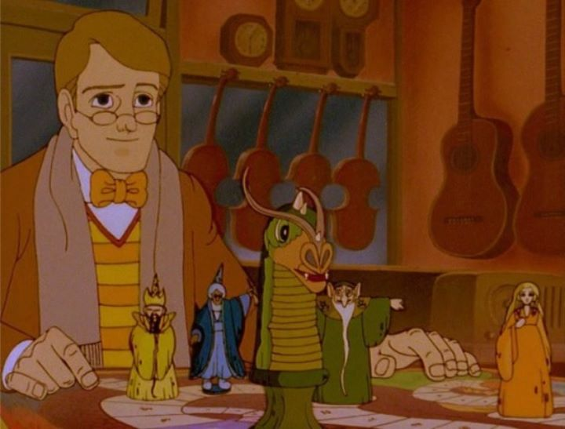

Ah, the fantasy animated epics of Rankin and Bass... yes, they are best known for their stop-motion Christmas specials, but they produced and directed a variety of animated works, including a few cel-animated features drawn by an early animation team in Japan. Some of the best of these focused on medival fantasy and magic, the last such genre piece they directed being "The Flight of Dragons," a feature-length television special based on a book of the same name. Somehow, I missed many of these films in my childhood, so to go into "The Flight of Dragons" blind as an adult was a great pleasure. Like many of their films, much of it comes across as crude and dated, but is still so original and pure that it would be a shame to skip it entirely.The story introduces a world where science is slowly overtaking the interest of humans in place of magic. In many ways, they do the same things, but the science of logic comes across as... more logical, as something that we could have a grasp at understanding rather than simply trusting in. This world apparently only has four wizards that actually use magic (if they were the only beings to be able to use the tool, then it would make sense that humans would quickly move on), and their powers are dwindling. The Green Wizard proposes to set a secret sanctuary for them and the other magical creatures to retire to, and the Blue and Yellow Wizards agree. But the Red Wizard, ruler over the dominion of evil and darkness, believes they can take back the world for themselves. Unable to fight against him directly (a magical God-like force referred to as Antiquity forbids that they destroy the Red Wizard, for his evil is necessary to balance the existance of magic), they prepare a small team of heroes that will take the quest to save the land. One such hero is found in present day (circa 1982, when this film was made), a young man named Peter Dickinson (which happens to be the name of the author of the book this movie is very loosely based on). Peter studied to be a scientist, but shifted to his passion of fantasy and dragons, and was happy to help when he was whisked away to a land many centuries ago to join the quest. His knowledge of science and love for magic makes up the not-so-subtle themes of the movie, and to some great effect. One of the best scenes is when Peter listens to an elder dragon explain how the large lizards are able to fly, and then deducing his own explaination using modern science (much to the bewilderment of the medival cast). Yes, the film's story is intended directly for young children, but the originality of it all was a pleasure to watch.Animation from Rankin and Bass always looked a bit cheap (it was the "heart" of the stories and characters that always sold the movies), and "The Flight of Dragons" is no exception. Most of the scenes are barely animated, satisfactory for the content but clearly done with a budget and deadline in mind. The backgrounds are clearly hand-painted or colored-in with pencil, dated but the hand-crafted quality is special in this day and age. The character designs are as unique as the story, and while it can be a bit uneven (the Red Wizard looks like an ugly orc, and Peter looks like the most plain human-being you've ever seen), it adds character to the film as a whole. The music is largely forgettable, even with the vocal theme at the beginning, but the voice acting is a treat, despite the dated audio quality. I purchased this film on Bluray, and it came with two versions: an HD widescreen format (magnified from the original 4:3) ratio, and and SD version with the original uncropped picture. The HD is visible for some scenes more than others, and the color is improved from the SD version on the disk, but to have both versions is appreciated nonetheless, they each have their benefits. Of the other fantasy films of their loose trilogy ("The Hobbit" and "The Last Unicorn"), "The Flight of Dragons" is the weakest, but it still provides a nostalgia and purity that is rare to see anywhere, even in the wide world of animation.
- "Ani" More reviews can be found at : https://2danicritic.github.io/ Previous review: review_The_Fantastic_Adventures_of_Unico Next review: review_The_Fox_and_the_Hound